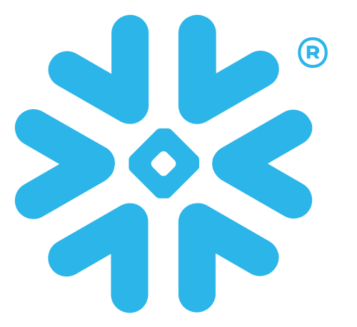
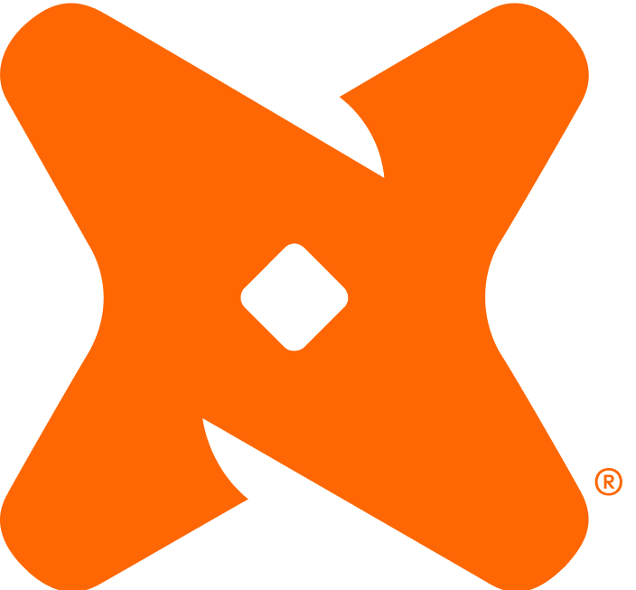

Power Platform
Aplicações corporativas e automação de processos: regras de negócio, componentes reutilizáveis, conectores personalizados e integração entre sistemas via APIs REST.
- Power Apps
- Power Automate
- Dataverse
- Power Fx
- SharePoint
- APIs REST
Power Platform + Dados + IA Aplicada
Sou Ildean Freitas, analista de desenvolvimento de software sênior. Há cerca de dez anos construo aplicações, automações e pipelines analíticos que sustentam a decisão — com formação concluída em IA generativa e cases públicos em evolução sobre esses fundamentos.
Sobre
Comecei consertando hardware e instalando sistemas no interior do Pará, migrei para redes e passei seis anos como gestor dos sistemas de uma empresa de atacado e varejo. Era a ponte entre quem usava o ERP e quem o mantinha. Essa origem definiu meu jeito de trabalhar.
Junto com os ERPs, eu respondia pela infraestrutura — banco de dados, replicação, backup e firewall — coordenando as equipes de suporte de rede e hardware. Em 2017 migrei para desenvolvimento sobre a Power Platform. Depois vieram varejo, distribuição, mineração e consultoria; hoje atuo como analista de desenvolvimento de software sênior na Compass UOL, em projetos corporativos que combinam Power Platform e Business Intelligence sobre fontes como SAP Datasphere, SAP BW, SAP HANA, Analysis Services e Azure Databricks.
Sou pós-graduado em Engenharia e Arquitetura de Dados com Inteligência Artificial e tenho MBA em Ciência de Dados e Big Data Analytics, sobre uma base de bacharelado em Sistemas de Informação. O que ficou de todo esse percurso é a insistência em governança, documentação e reuso do que já funciona — este portfólio segue as mesmas regras.
Cada case declara explicitamente o seu estágio. Nada aqui afirma execução, métrica ou impacto sem evidência — e quando um projeto é apenas arquitetura documentada, ele diz isso com todas as letras.
Especialidades
Na maioria das empresas por onde passei, quem constrói o aplicativo que coleta o dado não é quem monta o pipeline que o analisa. Trabalho dos dois lados — e é daí que vem quase tudo o que aprendi sobre onde o dado se perde no caminho.
Aplicações corporativas e automação de processos: regras de negócio, componentes reutilizáveis, conectores personalizados e integração entre sistemas via APIs REST.
Pipelines, modelagem dimensional, transformação e consumo analítico: do dado de origem até indicadores confiáveis para operação e decisão.
Aplicações de IA generativa sobre Python e APIs: modelos de linguagem, RAG para ancorar respostas em base própria, agentes e automação de tarefas. Cases públicos em evolução.
Cases
Prefiro três cases fortes a uma lista longa e superficial. Este portfólio está sendo construído por partes — o que já está aqui é real e verificável.
Laboratório de conclusão da formação em Engenharia de Dados: pipeline analítico executado de ponta a ponta sobre uma base transacional em PostgreSQL, containerizada em Docker. O Airbyte replica as tabelas para a camada RAW do Snowflake, o dbt padroniza e monta o modelo dimensional em STAGING, INT e DW, e o Airflow coordena o ciclo — frescor da fonte, sincronização, dbt build e reconciliação contra a origem — antes do consumo em Power BI.
Evidências e limites: laboratório concluído e entregue. São 22 modelos dbt sobre uma tabela fato de 16.044 linhas, e o dbt build fecha com 136 testes aprovados e nenhum aviso nos dois ambientes de execução, local e em container. Dado pessoal fica fora do modelo analítico e cada camada roda com o menor privilégio necessário. O repositório é privado, então esses números não são publicamente verificáveis — demonstro em uma conversa.
Arquitetura de dados
Ambiente de desenvolvimento
Persistência
Capacidades transversais
Aplicação em Power Apps Canvas que recebe lotes de notas fiscais por importação de planilha. Um fluxo em Power Automate valida o arquivo e grava cada linha como trabalho no Dataverse; robôs em Power Automate Desktop consomem a fila, registram a nota nos portais e devolvem o desfecho, que o operador acompanha na própria tela. Cada trabalho tem chave de idempotência e é reservado antes de rodar — reenviar um lote não duplica processamento.
Declaração de escopo: o projeto foi entregue com importação pelo aplicativo, fila no Dataverse, execução pelos robôs e consulta de status em operação. O repositório público é uma reconstrução: contrato da fila, diagrama, dados de exemplo e cenários de teste foram reescritos do zero, sem ambiente, portal, credencial ou documento real.
Operação assíncrona
Fila e workersProteções por etapa
Lakehouse implementado no Databricks para dados abertos da Câmara dos Deputados. Um coletor Python consulta 17 endpoints configurados em YAML, preserva a origem auditável e promove os dados por Bronze, Silver e Gold para consumo analítico no Power BI.
Evidências: o Lakehouse opera no Databricks com Unity Catalog Volume, PySpark e Delta; o ambiente local apoia desenvolvimento e testes. São 48 testes automatizados e validação contínua no GitHub.
Lakehouse público
Databricks Lakehouse · Power BIAmbientes de execução
Controles transversais
Robô em Power Automate Desktop que renova tokens OIDC para múltiplas contas. Ele usa HTTP onde existe API e recorre ao navegador somente para login, OTP e captura do token; após a conferência, o serviço interno o distribui em Redis com TTL.
Evidências e limites: Validado ponta a ponta em homologação, com processamento multiconta, falhas isoladas por conta e classificação operacional de erros. O case público preserva a anonimização de ambientes, portais, endpoints e credenciais.
RPA de autenticação com OTP
Anatomia de uma contaTratamento de erro por conta · uma falha não derruba a rodada
Chamadas HTTP
Interações no navegador
Por que não é só um POST /token
Janelas que governam o desenho
Por que alguns cases dizem “não executado”. Porque é verdade. Prefiro um portfólio menor e confiável a um maior e impreciso — e o mesmo critério vale para toda métrica, entrega e certificação citada aqui.
Engenharia de Dados · Projeto acadêmico aplicado
Arquitetura em camadas sobre Amazon S3, com pipeline ETL e organização Medalhão, desenvolvida como projeto aplicado da pós-graduação em Engenharia e Arquitetura de Dados com Inteligência Artificial. O cenário simula uma operação de mineração, escolhida por concentrar sistemas que não conversam entre si.
A operação modelada reúne controle de combustível e manutenção de frota em ERP, telemetria IoT da movimentação de cargas, integrações por API e arquivos de geologia e laboratório. Cada origem entra no Bronze como chegou, o ETL padroniza e valida no Silver, e o Gold entrega o modelo pronto para análise. Catálogo, controle de acesso, qualidade e monitoramento atravessam as três camadas.
Declaração de escopo: projeto acadêmico autoral concluído em 2025. A mineradora é um cenário simulado e os dados são fictícios — nada aqui saiu de sistema corporativo ou de terceiros. O diagrama representa a arquitetura proposta, não um ambiente em produção.
Arquitetura Medalhão
Camadas em Amazon S3Fontes
Pipeline de dados
Consumo
Capacidades transversais
Recebe os dados na forma mais próxima possível da origem, preservando rastreabilidade e base para reprocessamentos.
Concentra padronização, tratamentos e validações necessários para elevar a qualidade e a consistência dos dados.
Disponibiliza dados organizados para consumo analítico e suporte à tomada de decisão.
Trajetória
Alocado na Petrobras. Sustentação e evolução de 68 painéis de Power BI e de 8 aplicações corporativas, consumidos por mais de 10 mil colaboradores como base de decisão. Integração e modelagem de dados de SAP Datasphere, SAP BW, SAP HANA, Analysis Services, SQL Server, Oracle e Azure Databricks. Automações em Power Automate sobre SharePoint. Times ágeis com SAFe, Scrum e Kanban. Remoto.
Alocado no Ministério da Gestão e da Inovação em Serviços Públicos (MGI). Mais de 10 aplicações em Power Apps sobre Dataverse e SharePoint, com automações em Power Automate e conectores personalizados, além de dashboards em Power BI. Padrões de arquitetura e integração corporativa. Brasília/DF.
Construção do Data Warehouse corporativo de uma mineradora, cobrindo 10 áreas — recursos humanos, financeiro, estoque, logística, faturamento, geologia e laboratório, além de movimentação de material, telemetria de frota e horas de operação de maquinário. O modelo unificou o ERP, o rastreamento de veículos e o controle de abastecimento, que até então só existiam separados. Em paralelo, mais de 15 aplicações em Power Apps e as automações que as alimentavam. Power Automate, Power BI e Report Builder sobre SQL Server e Firebird. Marabá/PA.
Introdução da Power Platform na empresa: mais de 10 aplicações que digitalizaram processos até então conduzidos fora de sistema, integradas ao ERP TOTVS e à plataforma de venda externa da Máxima. Relatórios de apoio à decisão para diretoria, gerência e equipe de vendas em campo. Sustentação dos ambientes de TI e administração de SQL Server, Oracle e Firebird. Marabá/PA.
Condução da substituição do ERP em 4 lojas — matriz e três filiais, com 60 checkouts cada — para WinThor/TOTVS, concluída em 3 meses. Papel de gestor do projeto: requisitos, homologação, corte do sistema anterior e suporte pós-implantação. Treinamento de mais de 200 colaboradores em operação de checkout, financeiro, contas a pagar e a receber, compras e movimentação de estoque. Parauapebas/PA.
Formação e certificações
Somente certificações com credencial pública verificável.
Idiomas: português (nativo) e inglês (básico).
Contato
Aberto a conversas sobre Engenharia de Dados, Power Platform e IA Aplicada. O LinkedIn é o canal mais rápido.
Marabá, Pará · Brasil · disponível para atuação remota